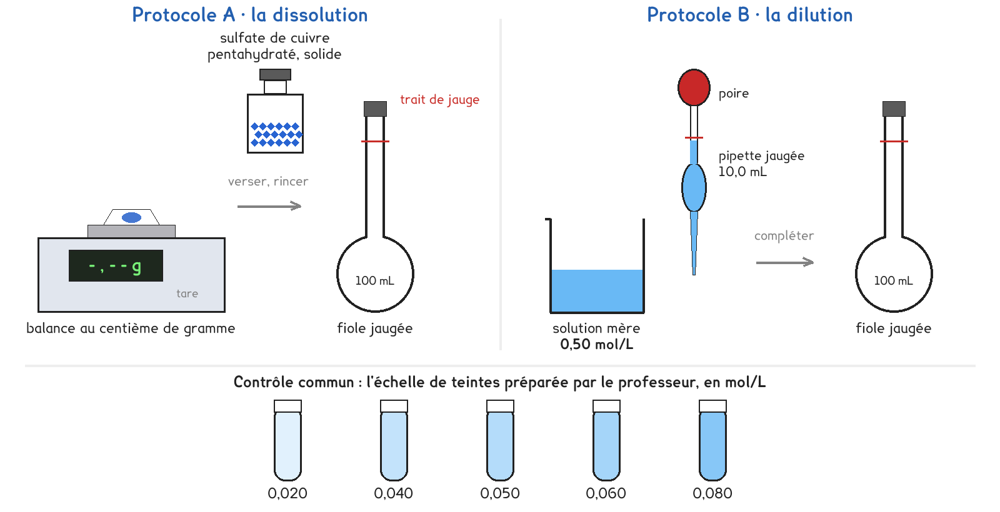

1re Bac Pro · toutes spécialités · TP commun CT-05
Comment préparer 100 mL d'une solution de sulfate de cuivre à 0,050 mol/L ?
1 figure
Sujet. Pour traiter ses tomates, un jardinier prépare une bouillie au sulfate de cuivre. La notice demande une solution à 0,050 mol/L : la concentration est donnée en moles, et il faut en déduire ce qu’on pèse ou ce qu’on dilue.
Problématique : comment préparer 100 mL d’une solution de sulfate de cuivre à 0,050 mol/L ?

a) Dans la bouillie, entourer le soluté et le solvant.
Le soluté : l’eau · le sulfate de cuivre
Le solvant : l’eau · le sulfate de cuivre
Le solide du flacon a pour formule CuSO4, 5 H2O, avec cinq molécules d’eau.
b) Calculer sa masse molaire M. La première colonne est faite.
| L’atome | Cu | S | O | H |
|---|---|---|---|---|
| Nombre d’atomes dans CuSO4, 5 H2O | 1 | 1 | ………… | ………… |
| Masse molaire atomique (g/mol) | 63,5 | 32,1 | 16,0 | 1,0 |
| Nombre × masse molaire (g/mol) | 63,5 | ………… | ………… | ………… |
M = 63,5 + ………… + ………… + ………… = ………… g/mol
Deux protocoles répondent à la même question. Une partie de la classe prend A, l’autre prend B, et on compare les teintes à la fin.
Protocole A · la dissolution. On pèse le solide, on le dissout dans une fiole jaugée de 100 mL, on complète au trait avec de l’eau distillée.
Protocole B · la dilution. On prélève 10,0 mL d’une solution mère à 0,50 mol/L à la pipette jaugée, on les verse dans la fiole jaugée de 100 mL, on complète au trait.
c) Protocole A : calculer la quantité de matière n, puis la masse m à peser.
n = C × V = 0,050 × ………… L = ………… mol
m = n × M = ………… × ………… = ………… g
d) Protocole B : vérifier la concentration obtenue dans la fiole.
n prélevée = 0,50 × 0,0100 = ………… mol
C = n ÷ V = ………… ÷ 0,100 = ………… mol/L
e) Compléter le tableau pour comparer les deux protocoles.
| Protocole A | Protocole B | |
|---|---|---|
| Ce qu’on mesure avec précision | …………………… | …………………… |
| L’instrument de précision | …………………… | …………………… |
| Faisable avec une balance au gramme | oui · non | oui · non |
Les balances du labo pèsent au gramme près : elles affichent 1 g pour toute masse de 0,5 à 1,5 g.
f) Pourquoi le protocole A est-il impossible avec ces balances ?
Le professeur peut imposer le protocole qui est possible aujourd’hui.
g) Quel protocole prenez-vous ? Justifier en une phrase.
Je prends le protocole ……… parce que ……………………………………………………………………
h) Hypothèse : on complète 1 cm au-dessus du trait. La solution sera…
plus concentrée · moins concentrée · aussi concentrée
Avant de commencer
Gants et lunettes. Le sulfate de cuivre est nocif et toxique pour les milieux aquatiques.
Tous les restes vont au bidon de récupération : rien à l’évier.
On pipette avec une poire, jamais à la bouche, et jamais directement dans le flacon.
Contrôle commun. Verser un peu de la solution dans un tube identique à ceux de l’échelle, et comparer les teintes en regardant par-dessus, sur une feuille blanche.
i) Dessiner le col de la fiole au moment où l’on arrête de remplir.
Le schéma se dessine sur la feuille du TP.
Faire figurer le trait de jauge, le ménisque de l’eau et la position de l’œil.
j) Relever vos résultats.
| Ce qu’on a pesé ou prélevé, avec l’unité | Volume final (mL) | Tube de l’échelle le plus proche (mol/L) |
|---|---|---|
| …………………………… | …………… | 0,020 · 0,040 · 0,050 · 0,060 · 0,080 |
k) La teinte est-elle celle attendue ? Sinon, quelle erreur l’explique ?
l) Comparer avec un groupe de l’autre protocole, ou avec un autre binôme.
Même teinte ? Quel protocole est le plus sûr avec le matériel du labo ? …………………………
La notice d’un produit donne souvent sa concentration en masse, en g/L : Cm = C × M.
m) Calculer la concentration en masse de la bouillie préparée.
Cm = ………… mol/L × ………… g/mol = ………… g/L
n) Répondre à la problématique en deux phrases.
Ce que ce TP a établi, et qui vaut pour toute solution :
À RETENIR
n = m ÷ M : n en moles (mol), m en grammes (g), M en grammes par mole (g/mol).
C = n ÷ V : C en moles par litre (mol/L), V en litres (L).
Cm = C × M : la concentration en masse, en grammes par litre (g/L).
Par dissolution, on pèse le soluté ; par dilution, on prélève une solution plus concentrée. Dans les deux cas, on complète la fiole jaugée jusqu’au trait.
Le jardinier n’a qu’une balance de cuisine, au gramme près. Pour que l’erreur de 1 g compte peu, il prépare 10 L de bouillie au lieu de 100 mL. Entourer la masse qu’il pèse.
1,25 g · 12,5 g · 125 g
TP commun de physique-chimie, toutes spécialités. Le travail se fait sur la feuille du TP : cette page en est la version à l'écran, sans les lignes à remplir. Rien n'est enregistré.